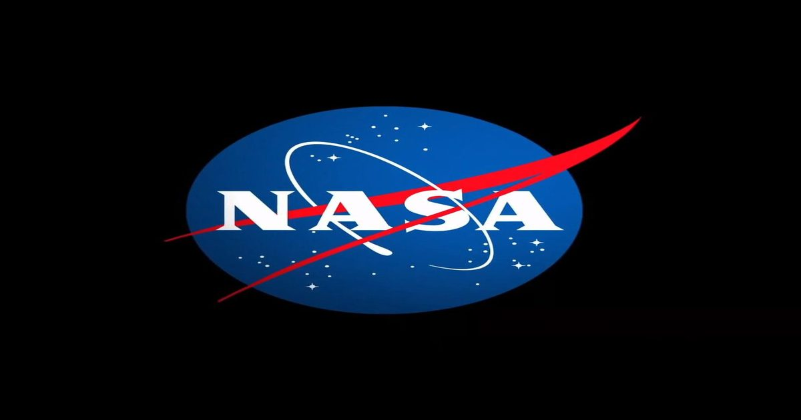

NASA добавляет Blue Origin New Glenn 9×4 к контракту на оказание услуг по запуску
В соответствии с пунктом контракта на рампе NASA добавило услугу запуска New Glenn 9×4 Blue Origin к контракту NASA Launch Services (NLS) II.
Служба запуска New Glenn 9x4 будет доступна в офисе программы NASA Launch Services для использования в будущих миссиях.
Контракты NLS II представляют собой контракты с множественными вознаграждениями, бессрочной доставкой/бессрочным количеством с ...